MiniForts
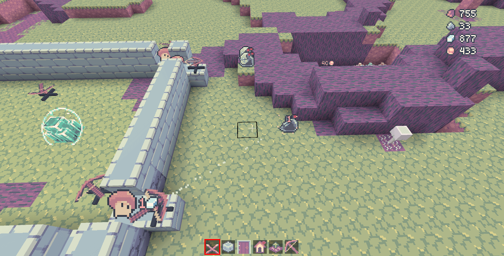
A game about building and defending a fort.
In 2021, I started making a small base-builder RTS game. It runs on the Minetest voxel game engine.
Project detailsView source- status
- unreleased
- role
- creator
- platform
- Minetest
- tech
- Lua, JSX
The goal of this game is to defend a central core from invaders. The player commands minions to build up a fort around the core.
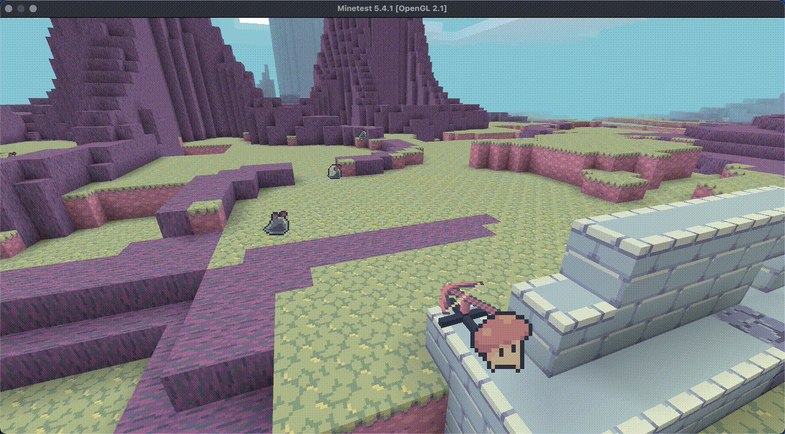
Minions are indirectly commanded by putting construction orders in the world.

It has some rudimentary physics, where structures disconnected from the ground get destroyed.
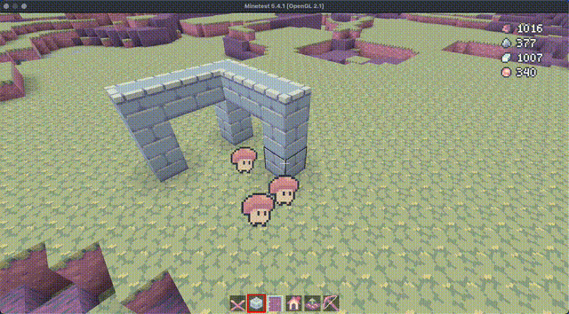
The game is not complete, but it’s decent enough for a few minutes of gameplay.
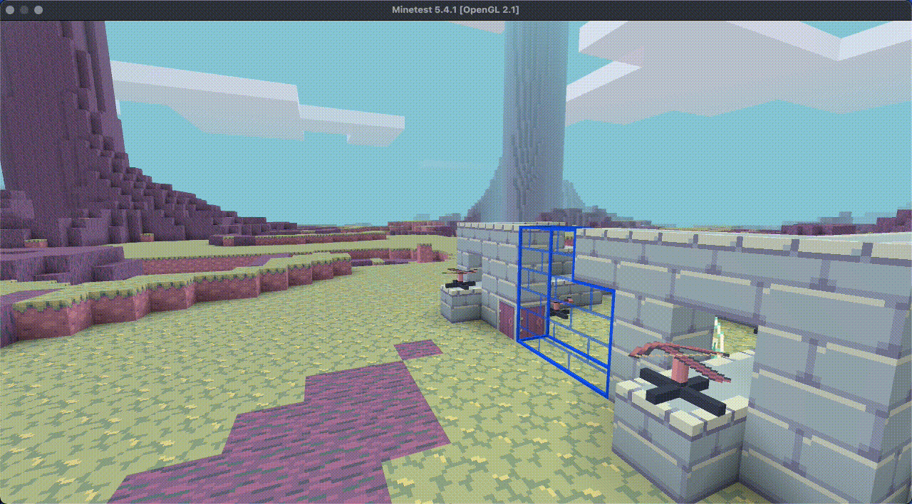
The game’s development slowed down as I found myself being limited with Minetest’s API and engine - particularly its client-server limitations. I guess it’s because Minetest is a first-person creative-survival voxel game "engine" - a Minecraft clone, if you will. It’s not particularly suited for a base-builder RTS experience.
Here, I’ll write about some of the major and minor limitations and the solutions I came up with.
The scripting language
Minetest uses Lua as its scripting language, which I found limited for the scale of the project. For MiniForts, I needed strong-typing, advanced OOP, and some scalable UI DSL.
So MiniForts was written in TypeScript. I used TypeScriptToLua to convert it to Lua that the game understands.
With the addition of custom .d.ts declaration files, I was able to use Minetest’s API in a type-safe way. TypeScript also unlocked fancy OOP, very useful in developing a game, and JSX! More on JSX in the following section.
The GUI engine
One major problem was Minetest’s GUI system. It uses a procedural GUI model, where interactions and UI updates are procedural, as opposed to the modern declarative UI model. Furthermore, it uses absolute positioning and has a lack of nesting or layouting.
To solve this I used JSX, an XML-like syntax for defining UI in code.
But Minetest is not a web browser. There isn’t anything in Minetest that knows how to render JSX elements. I had to create a GUI engine within the game that takes in JSX elements and renders it via Minetest’s APIs and that also works with the server-driven UI system that Minetest has.
The end-result was a more flexible GUI system, with bonus reactive data-binding and callbacks.
|
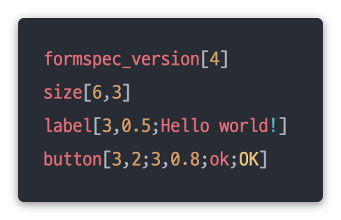Minetest’s formspec
|
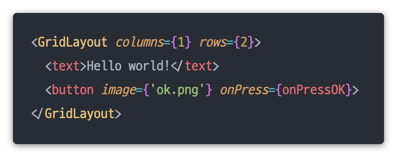JSX (TSX) version
|
Here’s an example layout which is the HUD that shows the player’s current resources in the upper-right corner of the screen:
 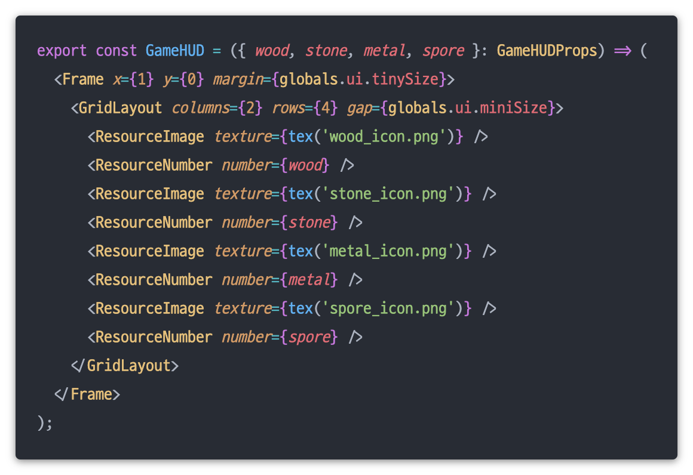
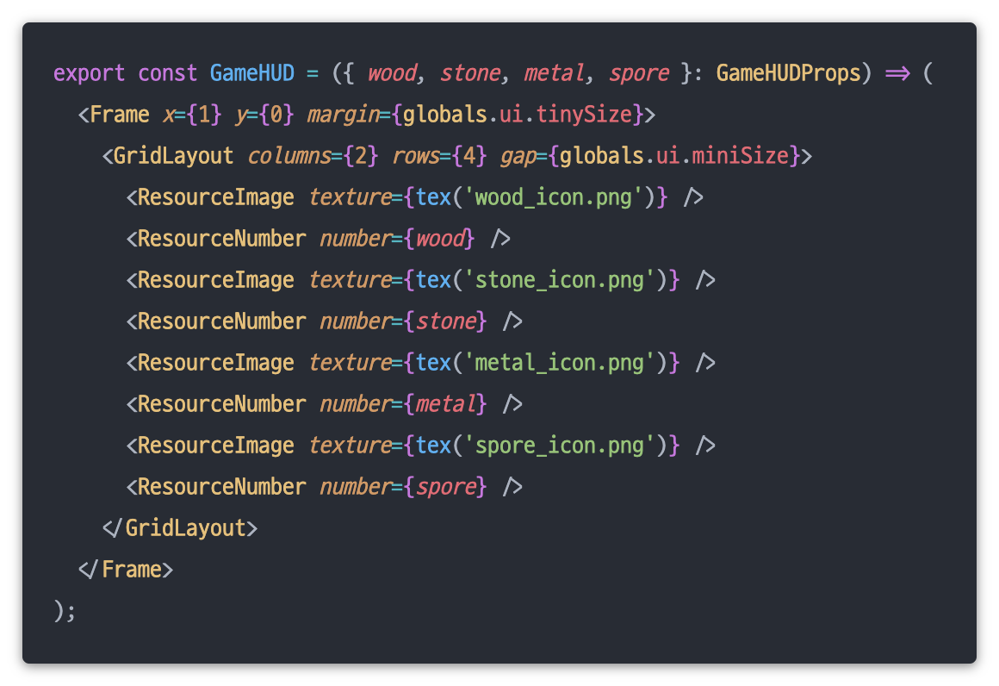
It was pretty interesting to recreate a React-like environment on top of a very limited GUI API.
Pathfinding
Minetest has a built-in ground-based A* pathfinding algorithm, implemented in C++, exposed via the Lua API.
I’ve found that the built-in pathfinder wasn’t sufficient for this game. This game has multiple agents with different locomotion types, a complex 3D terrain, and destructible walls.
I ended up implementing a hierarchical pathfinding algorithm with a structure similar to RimWorld’s region system, also inspired by Castle Story’s pathfinder.
Pathfinder debug view in action
The system divides the world into components, each of which is a volume that contains a set of positions reachable from one another.
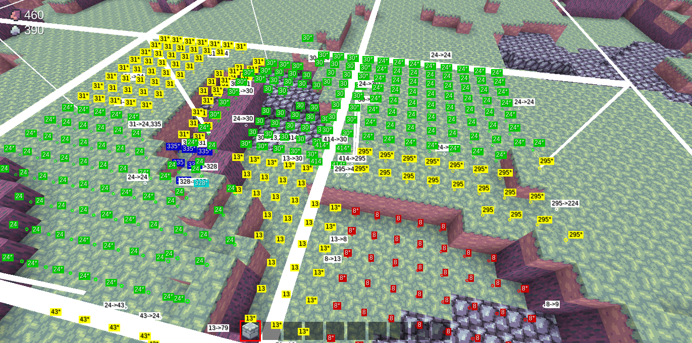Component debug view
The pathfinder then finds a path through the component-level first, which is very fast, and only resolving voxel-level paths when the agent is trying to move within a component.
Very fast pathfinding over large distances
World generation
At the time, I was only able to create one world type - the Forest.

The terrain is a combination of stepped gradient noise maps generated from Minetest’s Perlin noise generator.
The trees are positioned by placing points in a 2D grid and randomizing their locations within their grid cell.
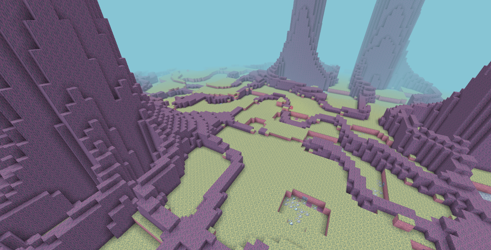
The roots are generated from the difference of two gradient noise maps, creating these snaking patterns, with height falloff based on the nearest tree.
The art
I like pixel art. It’s easy to make passable results.
 See also, botom right corner, unfinished enemy type: the Dung Beetle. It would place blocks of dirt against your fort walls which would allow other enemies to climb over!
See also, botom right corner, unfinished enemy type: the Dung Beetle. It would place blocks of dirt against your fort walls which would allow other enemies to climb over!
I struggled with the ground textures a lot. I realized that what’s more important at this resolution is the readability of something rather than the details of it.

A lot of inspiration was drawn from The Legend of Zelda: The Minish Cap, which had similar miniature environments.
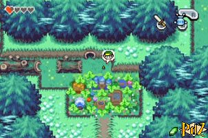Source: zeldaspalace.com
Autotile
Autotiling is a system that selects the correct node to use based on whether it’s a corner block, edge, etc. The autotile system in MiniForts works in 3D. The benefits are visual: less blocky blocks, and more cohesive structures.
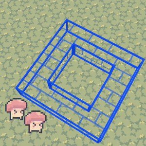Autotile
If you don’t understand, read some of these articles, then look back:
In the end, I was not able to publish this game to the game community because I felt like it was still incomplete in terms of features. The base game and systems were pretty good though. Anyway, it was still a fun project and a good nourishment for my game development hobby.